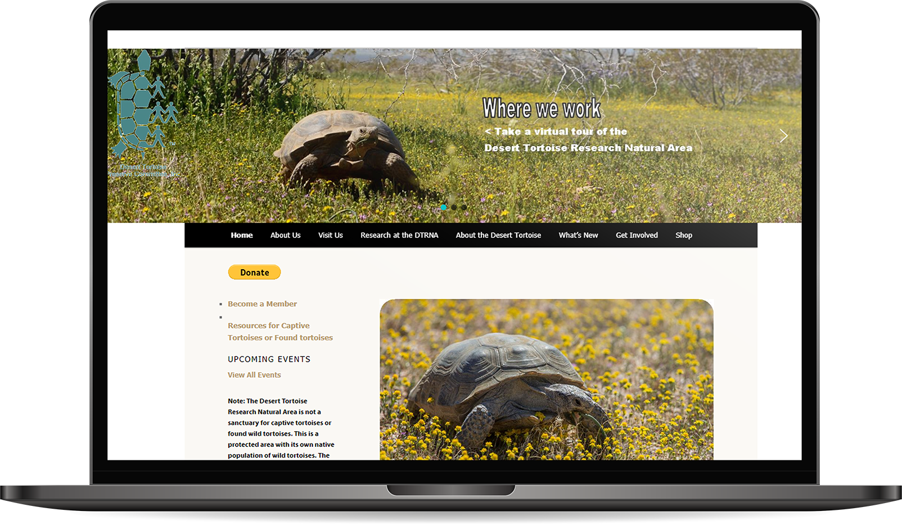
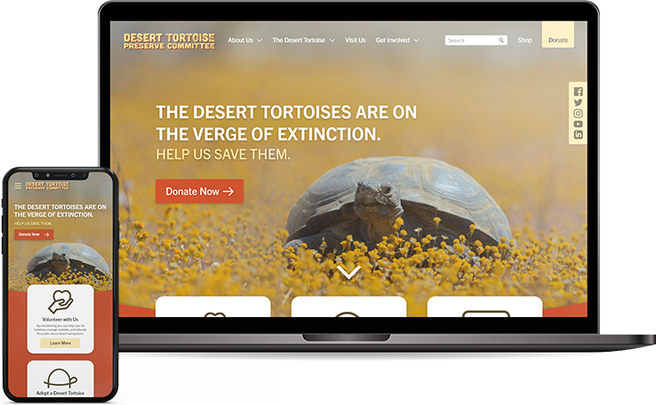
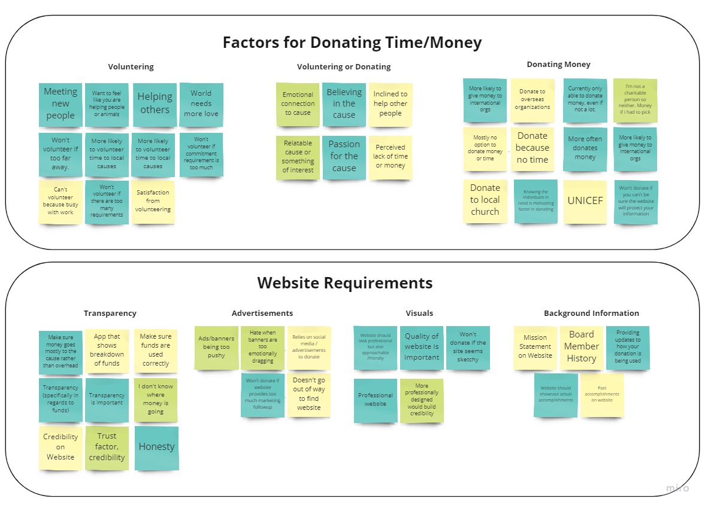
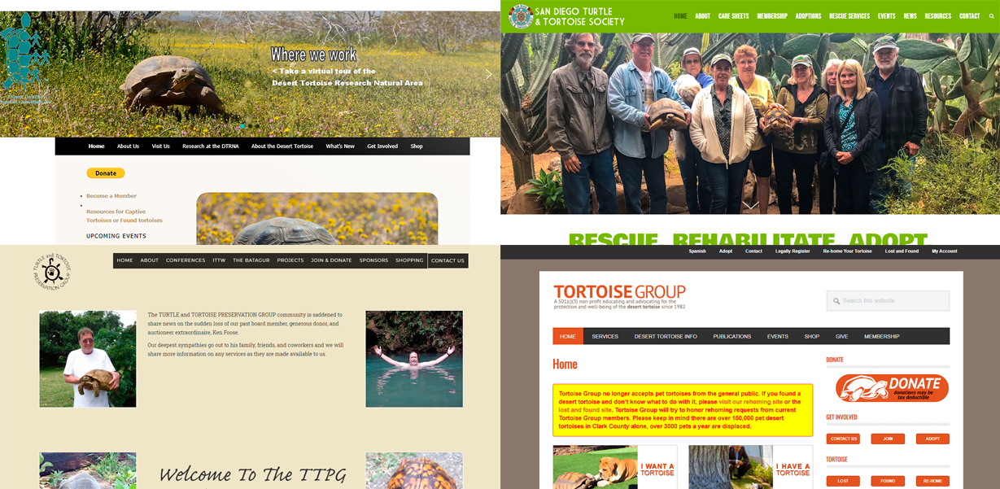
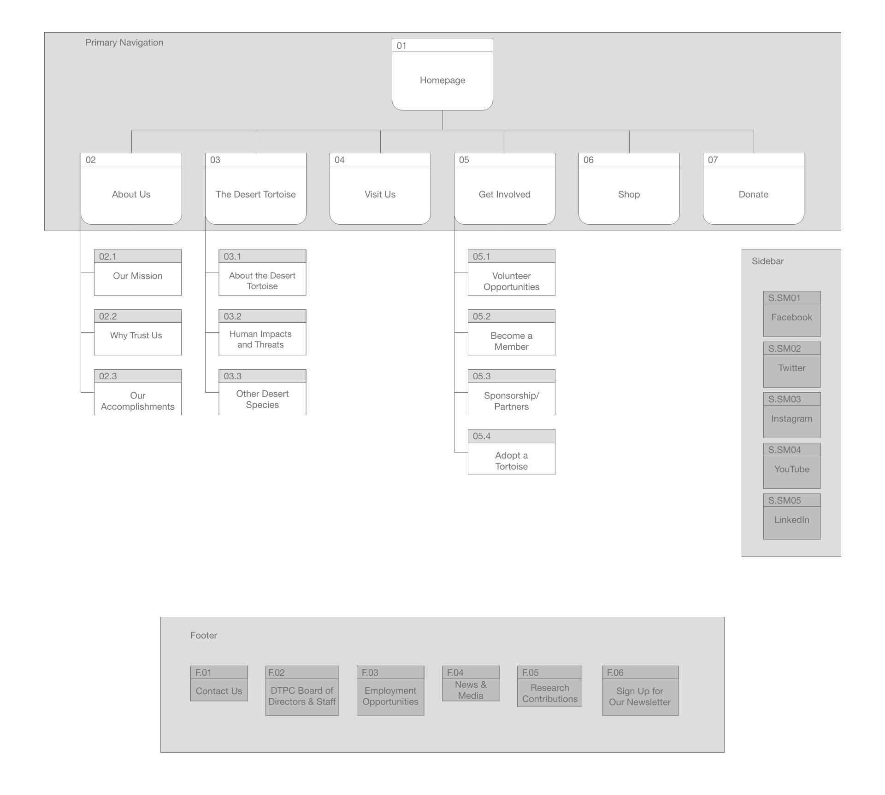
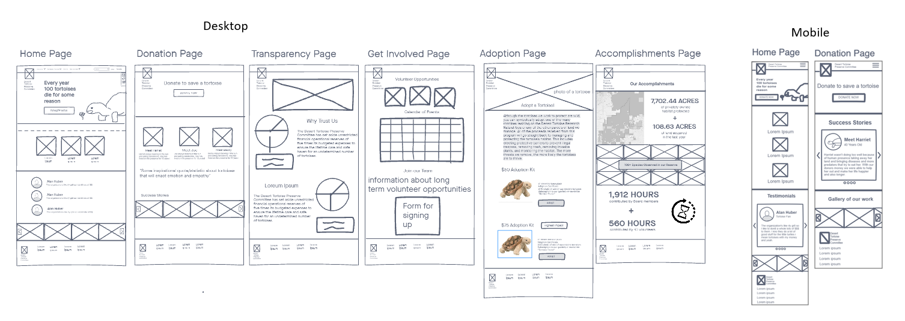
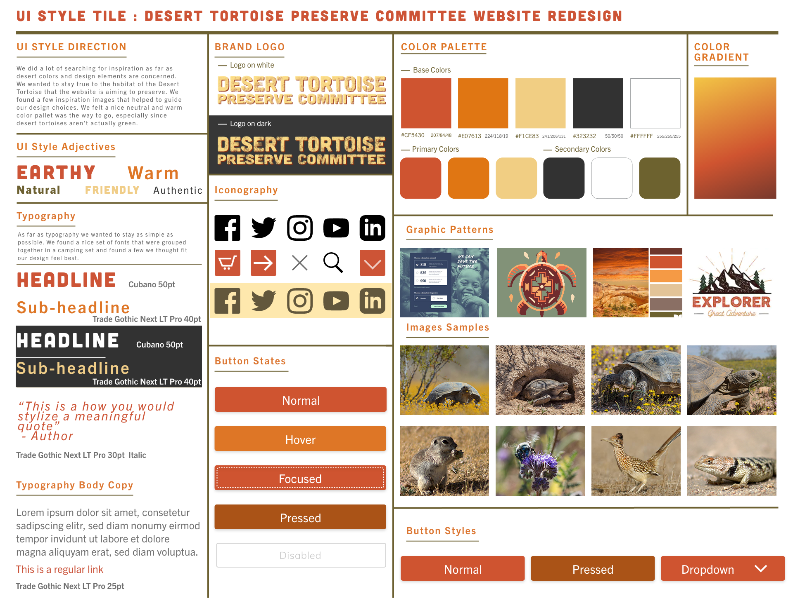
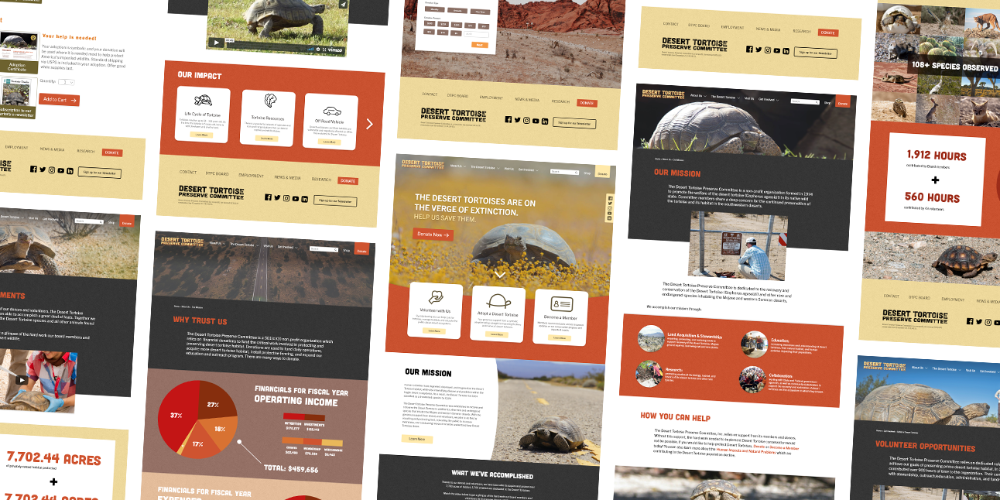

Project Context
This project involved the restructuring and redesign of a nonprofit organization's website, namely that of the Desert Tortoise Preserve Committee (DTPC). DTPC dedicates itself to saving the endangered desert tortoise.

A screenshot of the Desert Tortoise Preserve Committee website.
This project involved the restructuring and redesign of a nonprofit organization's website, namely that of the Desert Tortoise Preserve Committee (DTPC). DTPC dedicates itself to saving the endangered desert tortoise.
The primary issues with DTPC's website involves its visual design and information hierarchy. While the overall navigation of the site is decent, there is a lack of call-to-action for users: the header/banner that asks users to tour their natural area does not stand out and is difficult to read, and the donation button somewhat stands out but is small and lacks the context for donations. Overall, it is unclear from the homepage what the priorities of the organization are and what actions visitors to the site should be taking.
The Solution
The DTPC website should highlight the allocation of its funds and utilize a more inviting design with prominent calls to action to entice users to donate, volunteer, or learn more about the mission.

User Research
User interviews and surveys were conducted in order to gain insight into how users contribute to nonprofit organizations, namely through donating or volunteering, in addition to what website features factor into their decision to contribute.

Affinity diagram and card sorting of data from user interviews and surveys. Click to view in full size.
Results showed that all users primarily donate to nonprofits due to a lack of time for volunteering, and that visual design, transparency and credibility play a major role into whether or not they contribute. Therefore, it is important that users have an emotional connection to the cause through transparency and credibility. Users should be able to see where money is going and the website should be welcoming and look professional.

In addition to interviews and surveys, we conducted a form of ethnographical observation and competitor analysis by having users identify which tortoise non-profit organization they would donate to solely based on their website: DTPC, San Diego Turtle & Tortoise Society, Turtle and Tortoise Preservation Group, and Tortoise Group. Users noted that photos were important in their decision, likely because they connect one emotionally with the cause. Additionally, users chose the site that featured prominent calls to action that drew them to learn, donate, or contribute to the cause. Having the organization's mission statement in plain view also helped in giving credibility to the organization. As a result, the Turtle and Tortoise Preservation Group was chosen most. Although its visual design is lacking, they provided the organizations mission statement on the home page with clear calls to action in the form of large, distinct buttons.
Overall, these findings helped guide us in choosing what information we want to include in our redesign and how we might want to display it. Most users would rather donate money than their time, so donating should be the primary user flow we want to encourage in the redesign. Users should also be able to have an emotional connection to the cause through transparency of fund usage and credibility in the form of a welcoming and professional website.
Site Map and Wireframing
When planning out the site map, we wanted to focus on pages that demonstrated the organization's transparency and credibility, so we started with information about the company's missions, fund allocations, and accomplishments. User involvement is key, so donating was promoted throughout every page and pages that involve volunteering, sponsoring, and shopping were also included.

Click to view in full size.
For our wireframes, we wanted to focus on prototyping user flows that involved users learning about the organization's credibility and contributing via donation. In addition, mobile views of the home and donation pages were designed to demonstrate a sample of the website's responsiveness.

Click to view in full size.
Visual Design
Before moving on to creating a high-fidelity prototype, we settled on a style tile/guide to promote a consistent look for fonts, buttons, and icons across the website. Rustic, toned down colors of red and yellow matched the desert theme well and provoked a warm and friendly aesthetic for the organization, and the type of imagery of the tortoises and other wildlife that we planned to use were also included. A logo using a grainy texture was used to further blend into the desert theme, and as visible in the final prototype, a similar sandy texture placed behind translucent shapes using our base colors gave more depth to the pages rather than leaving backgrounds as simple, flat colors.

Click to view in full size.
Final Prototypes

With our style guide prepared, we reiterated on our wireframes to create a desktop and mobile prototype of our DTPC redesign shown below. Due to time contraints, only the donation user flow was included for the mobile prototype, but the home page was fully designed to demonstrate how the cards and other content would be organized in a mobile vs desktop format. More pages for the desktop prototype were created to allow users to simulate exploring the website to learn more about the cause and organization.